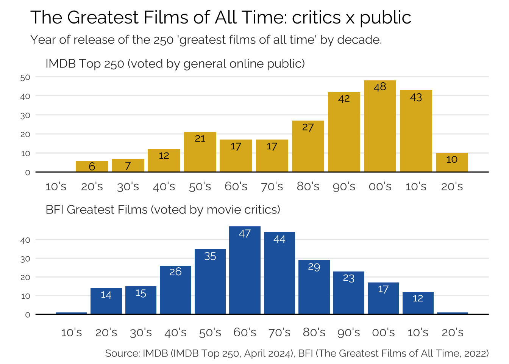
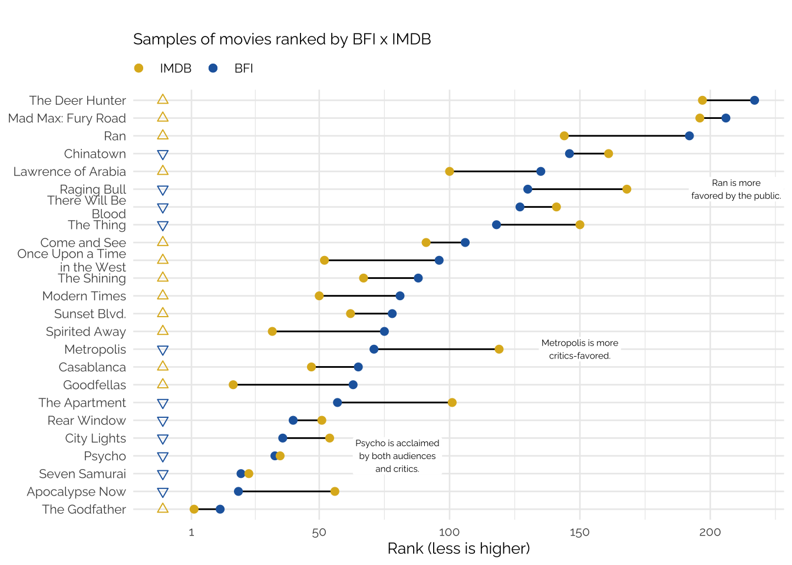
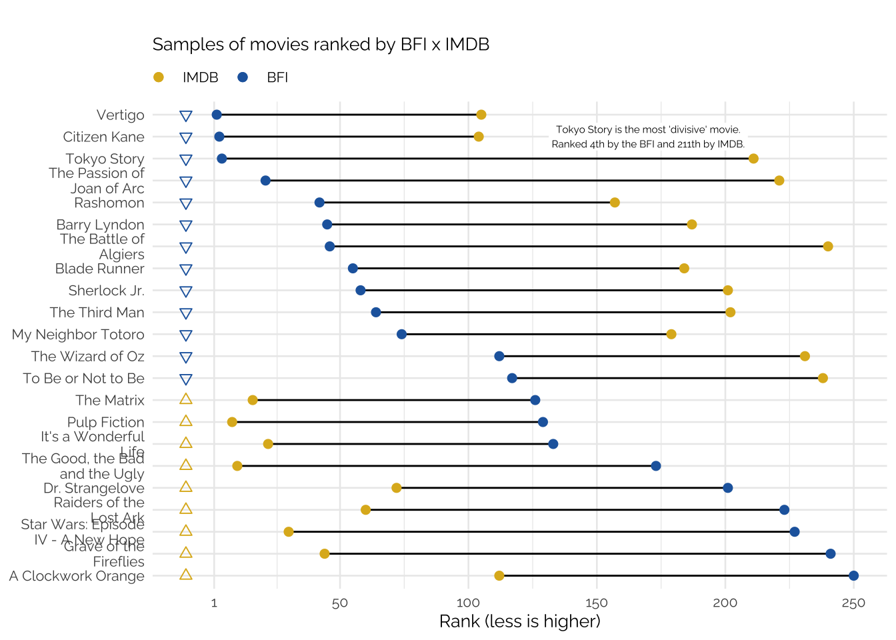

Movies rankings
While some find it odd to rank movie tastes, I’ve always enjoyed “greatest of all times” lists. When not taken too literally, these lists provide a resourceful almanac of good movies, including classics, and culturally relevant movies. By construction, these lists will always be lacking and always be biased: it’s a subjective evaluation of the best of the best films after all.
Traditionally, these lists were penned by movie critics or experts; more recently, however, there are several “greatest of all times” lists voted by the public. Perhaps the most well known of these is the Top 250 IMDB. As of December 2024, the top 250 films alone aggregate almost 180 million votes.
When comparing these lists, the ones made by critics and those voted by the broader public, one notices a kind “temporal bias” in the rankings. New movies, released in the past 10-15 years, rarely appear in prestigious lists such as the BFI’s Greatest Films. In fact, in it’s most recent edition, published in 2022, only 24 of the 264 films were released in the 21st Century (less than 10%). On the flip side, online rankings such as the Top 250 IMDB are flooded with new releases. Ignoring films released after 2022, almost 36% of the films featured in the Top 250 IMDB were released from 2001 to 2021.
In this post I delve into the data to try to visualize these patterns. Are movie critics biased towards a certain period of cinema? Are new movies overrated? Are they underrated?
Rankings
There are several “greatest movies of all time” lists. Comparing them directly is often impossible due to conflicting methodologies. For simplicity, I’ll delve mostly into the Top 250 IMDB and the BFI Greatest Films of All Time. IMDB’s ranking compiles the largest number of online votes and has a relatively sturdy methodology for both its ratings and its rankings. The BFI list compiles votes from academics, critics, curators, archivists, and programmers. Its most recent edition was published in 2022.
The lists are relatively comparable in size: IMDB’s has (obviously) 250 films while BFI’s has 264. While BFI’s list has ties, I ignore these to make comparisons simpler.
In a latter part of the post I extend the analysis to other lists published by media outlets such as Variety and TimeOut and also to other online sites such as Letterboxd.
The data
Getting all the data involves mostly a lot of webscraping. More information on the data collection process can be found on my Github.
Critics vs Public
Looking at the data by decade seems to reveal a clear pattern. BFI’s list peaks around the 1960’s, while IMDB’s list peaks around the 2000’s. There’s a small bump in the 1950’s but nothing noteworthy.
Going into greater details reveals some curious features about how these lists compare. Some films appear to be appreciated by both the public and the critics. Films like Kurosawa’s Seven Samurai, Hitchcock’s Psycho, and Coppola’s The Godfather all rank highly in both lists.
There are, of course, divergences: some films, like Metropolis (1927) and The Apartment (1960) are slightly favored by the BFI’s critics; meanwhile, Ran (1985) and Modern Times (1936) are favored by the public. These divergences don’t seem to correlate directly with the year of release of each movie or even with its director.
Its important to note that rankings work in a counter-intuitive fashion to most graphics, since the best (highest-ranking) films are associated with lower numbers and appear on the left. To make reading the graphics easier, colors and symbols were used to identify which films ranked higher on each list.

Looking even deeper into the discrepancies between the lists reveals an interesting trend. The movies on the top of the plot are overwhelmingly favored by the critics: these include Tokyo Story, Citizen Kane, Barry Lyndon, and The Third Man. Movies more to the bottom of the list are favorites of the public, including: Raiders of Lost Ark, The Matrix, Star Wars - New Hope, and Pulp Fiction.
While year of release seems to play a significant role, one can also theorize that the content of these films plays a much larger one.

Finally, it’s also important to note movies that appear exclusively in one list. These last two tables more clearly reflect the difference between critically appraised movies and favorites of the public.
The best ranking films in BFI’s list that don’t appear at all in IMDB’s list include The Rules of the Game (1939), Persona (1966), and Mulholland Drive (2001). This is definitely a very snobish list, but again, year of release doesn’t seem to matter much.
| Name | Year | Rank (BFI) |
|---|---|---|
| Jeanne Dielman, 23, quai du commerce, 1080 Bruxelles | 1975 | 1 |
| In the Mood for Love | 2000 | 5 |
| Beau Travail | 1999 | 7 |
| Mulholland Drive | 2001 | 8 |
| Man with a Movie Camera | 1929 | 9 |
| Sunrise | 1927 | 11 |
| The Rules of the Game | 1939 | 13 |
| Cléo from 5 to 7 | 1962 | 14 |
| The Searchers | 1956 | 15 |
| Meshes of the Afternoon | 1943 | 16 |
| Close-Up | 1990 | 17 |
| Persona | 1966 | 18 |
| Late Spring | 1949 | 22 |
| Playtime | 1967 | 23 |
| Do the Right Thing | 1989 | 24 |
| Au hasard Balthazar | 1966 | 25 |
| The Night of the Hunter | 1955 | 26 |
| Shoah | 1985 | 27 |
| Daisies | 1966 | 28 |
| Portrait of a Lady on Fire | 2019 | 30 |
The best ranking films in IMDB’s list that don’t appear at all in BFI’s list include The Lord of the Rings trilogy (2001-2003), The Shawshank Redemption (1994), and several Christopher Nolan movies. Outside of Lumet’s 12 Angry Men (1957) most of this list heavily skewed to the 1990’s onwards.
| Name | Year | Rank (IMDB) |
|---|---|---|
| The Shawshank Redemption | 1994 | 1 |
| The Dark Knight | 2008 | 3 |
| 12 Angry Men | 1957 | 5 |
| Schindler's List | 1993 | 6 |
| The Lord of the Rings: The Return of the King | 2003 | 7 |
| The Lord of the Rings: The Fellowship of the Ring | 2001 | 9 |
| Forrest Gump | 1994 | 11 |
| The Lord of the Rings: The Two Towers | 2002 | 12 |
| Fight Club | 1999 | 13 |
| Inception | 2010 | 14 |
| Star Wars: Episode V - The Empire Strikes Back | 1980 | 15 |
| One Flew Over the Cuckoo's Nest | 1975 | 18 |
| Se7en | 1995 | 19 |
| Interstellar | 2014 | 20 |
| Dune: Part Two | 2024 | 21 |
| The Silence of the Lambs | 1991 | 24 |
| Saving Private Ryan | 1998 | 25 |
| City of God | 2002 | 26 |
| Life Is Beautiful | 1997 | 27 |
| The Green Mile | 1999 | 28 |
Why the difference?
Recency bias or ‘new is always better’
Recency Bias
Recency bias is a well known cognitive bias, also known as memory bias. It describes the human tendency to attribute a greater importance to more recent events than to events that occurred further in time. This happens when travelers believe an airplane crash is more likely to occur after seeing news about an airplane accident; when investors believe the market will keep growing following a recent string of positive news; when swimmers believe that shark attacks will be more likely after watching a documentary about sharks.
More recently, recency bias has become a pervasive feature of online culture. In a never ending cycle of “the new is always better”, social media influencers and the media more broadly are constantly claiming that this new thing is actually the best thing of all time. Public opinion is slowly but surely catching up to this in sports discussions, as GOAT (greatest of all time) discussion fatigue is increasing among fans.

It’s really convenient that all of the GOATs, of all sports, just happen to play and perform at their best during the first 20 years of the most recent century: just in time for you to watch them.
For several different reasons, human’s tend to put a greater weight onto more recent events when evaluating pretty much anything. This is partly due to how our memory works but sometimes is due to availability. When something new happens, social media is quickly extracts all possible content from it and then moves on to the next thing.
Why the difference?
Gathering data from more sources reveals more curious patterns. The plot below aggregates data from 8 different sources: four of them voted by critics and four of them voted by the public1.
All four lists organized by critics present similar characteristics. They are shaped almost like a triangle with its vertex somewhere around the 1960’s with a small outlier peak in the late 1990’s. AFI’s ranking differs slightly from this pattern exhibiting a relatively larger peak in the 1940’s
The rankings voted by the public are much more scattered. Criticker’s ranking is the most similar to the critics’. It has a large share of films in the late 1940’s and 1950’s, but fewer in the 1960’s and 70’s relative to the critics.
IMDB’s ranking, as seen previously, is heavily skewed to right, with several films from the 1990’s and 2000’s. Empire’s ranking is similar in shape to IMDB’s, almost resembling a ladder that peaks in 1999.
Finally, Letterboxd’s list seems to be a mixture of Criticker’s 1950’s bias with IMDB’s 1990’s bias.
Similarly to the BFI x IMDB comparison, these lists aren’t directly comparable. Most importantly, they were (1) published at different times2; (2) have different sample sizes3. The Empire 500 Greatest movies
Footnotes
To be fair, Empire’s list combines both critics and general public. The numbers however, skew it toward the public.↩︎
The Criticker (2022), Letterboxd (2022), IMDB (2024), TimeOut (2024), BFI (2022), and Variety (2022) lists are relatively comparable among themselves. Empire’s ranking was published in 2008. AFI’s ranking is more recent but doesn’t include films released after the 2000’s.↩︎
For some reason 250, and its multiples, is a favorite among the public and 100 is preferred by the critics.↩︎